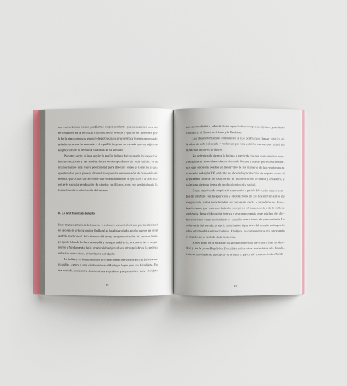
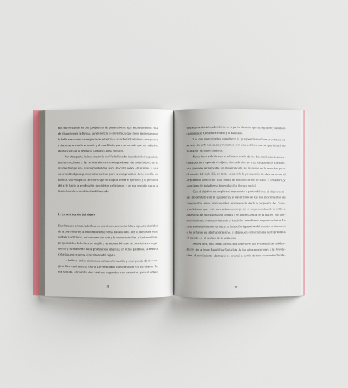
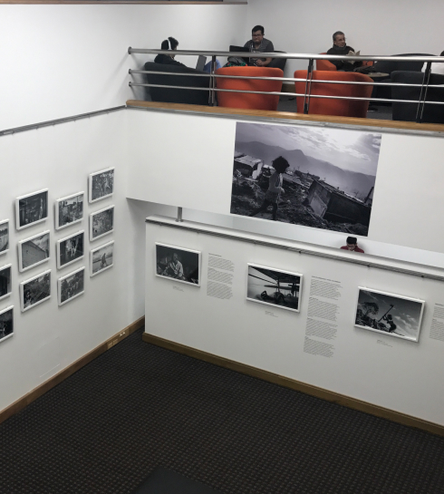
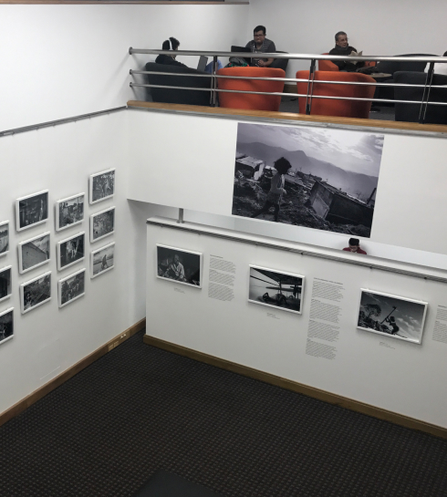
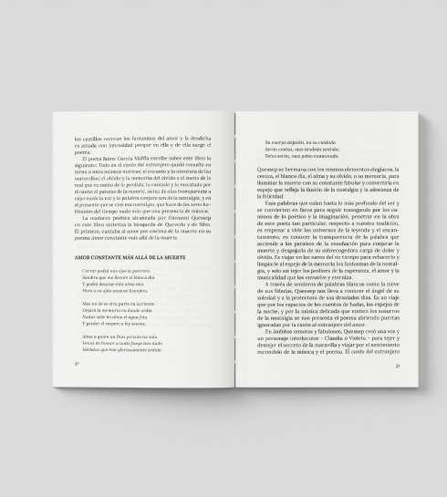
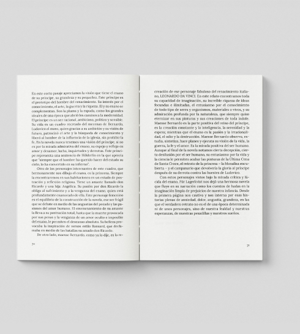
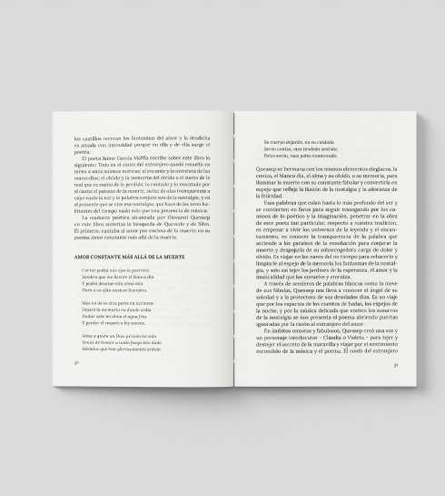
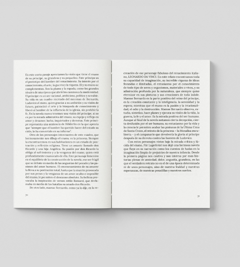

Fundación Publicaciones
La Sorda
La Sorda es un proyecto editorial alternativo y multidisciplinar que pretende movilizar la producción de pensamiento desde amplias y generosas perspectivas de divulgación basadas en el diálogo latente entre disciplinas, autores, territorios, prácticas e ideas. El proceso editorial de La Sorda concibe los textos como una producción de sentido que no se limita a la palabra escrita. Nuestras publicaciones incluyen acciones, dibujos, formas, registros, relatos y códigos que construyen múltiples formas de enunciación. En La Sorda, hablamos con las manos.
La Sorda se aleja de valoraciones y evaluaciones, desafiando a espíritus inquietos más que a lugares de conocimiento. Se plantea la consolidación de una comunidad creativa desde varios escenarios de acción: un espacio físico para las publicaciones impresas, momentos de encuentro para la discusión, y una plataforma (publicacioneslasorda.org) que será nuestra librería y canal de comunicación.
La Sorda busca la aparición de textos clandestinos y urgentes. Se propone hacer libros avispados y dichosos. Que detonen con ruido o en silencio. Que especulen y alardeen. Fábulas sin moraleja. Que aspiren a intentar. Que sean sospechas inteligentes. Que se lean sintiendo, que se puedan morder. Que se guarden en el bolsillo de la chaqueta, el pantalón o el vestido.
Más que revisar, a La Sorda le interesa poner en circulación. Pasar los textos a limpio y ponerlos a andar. Disponerlos para el disfrute o la furia del otro. Hacer libros como un gesto político que hoy resulta a todas luces anacrónico. Un tímido acto de rebeldía.
Sobra decir que no interesan las definiciones. Que no interesa el saber estrictamente disciplinar y especializado. Que no interesa el conocimiento lineal y acumulativo. Que la emergencia está en los márgenes. Que la discusión sobre la idea de cultura no se circunscribe a un saber determinado. Todo acto es ético y político. Es urgente pensar, por eso La Sorda quiere decir. Al oído, en voz baja, o gritando varias veces.
Sorda quiere dejar pruebas de los posibles lugares de pensamiento que emergen en el mundo actual, con las herramientas quizá más tradicionales, el libro y la colección. Lo Escrito, colección de textos resultado de procesos académicos que se alejan de lo institucional para aventurarse y circular en el mundo extremo de lo cotidiano. Lo Visto, colección de textos vertiginosos que se leen como acciones y dan cuenta de proyectos que documentan los tiempos del compartir y del actuar. Lo Dicho, colección que recopila relatos y experiencias que han tenido lugar en la conversación, en la palabra, en el juego y la oralidad.
Política de tratamiento de los datos personales
 



 



 


